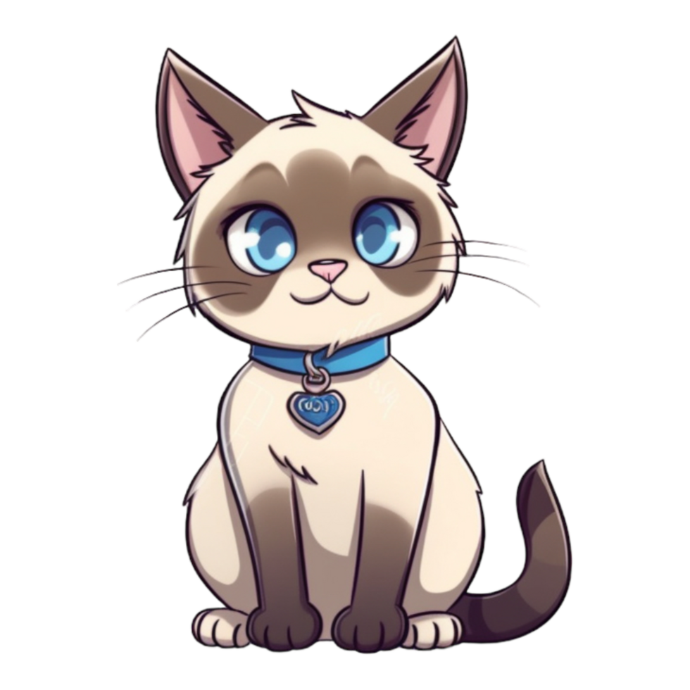

SysMap Solutions — Analista de Sustentação
abr/2024 – Atual- Monitoramento proativo de RPA via Grafana e banco de dados.
- Análise de logs, execução de scripts e correção de queries.

Analista de Sustentação • RPA & Python
Sou profissional de TI com 9 anos de experiência em sustentação e monitoramento de RPA. Atuo com análise de logs, Grafana, Python e PL/SQL, garantindo que automações rodem estáveis e entreguem valor.
Profissional de TI com 9 anos de experiência em sustentação, monitoramento e infraestrutura. Tenho experiência com RPA, análise de logs, Grafana, execução de scripts em Python e PL/SQL, além de ajustes em dashboards para acompanhamento de automações. :contentReference[oaicite:1]{index=1}
Análise e Desenvolvimento de Sistemas — UNINOVE (2019–2021)
Administração de Empresas — UNINOVE (2015–2018)
AWS Discovery Day (Computação em Nuvem) • DIO - Python Day
Conteúdo baseado no currículo. Para ver mais detalhes, baixe o PDF do currículo. :contentReference[oaicite:2]{index=2}